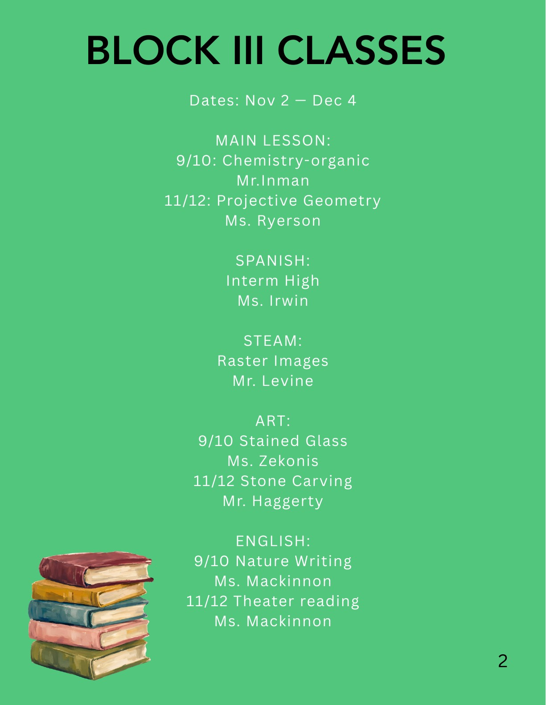
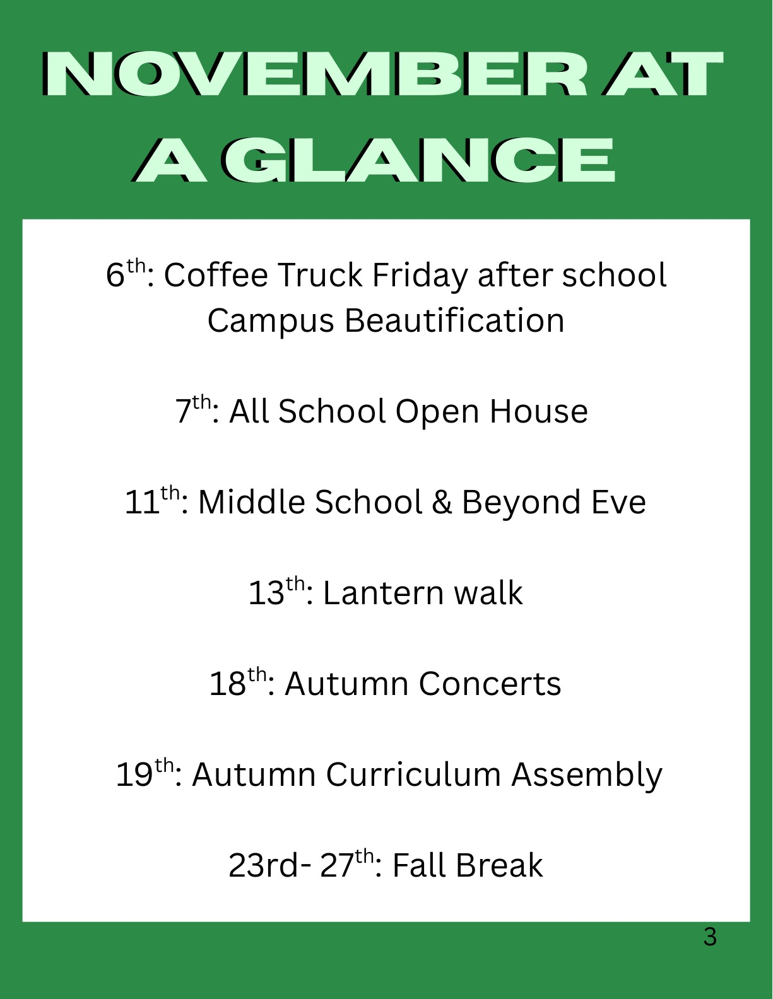
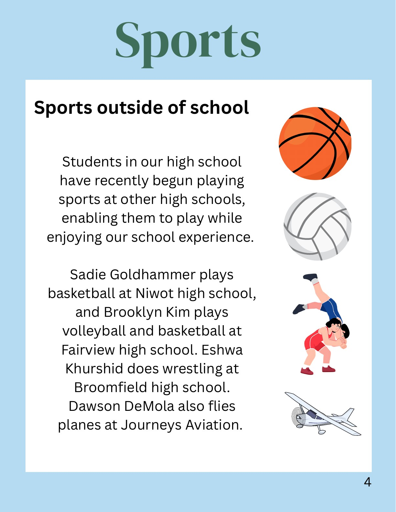
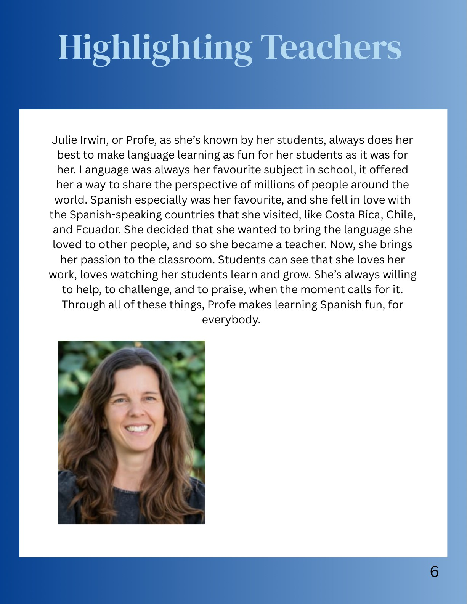
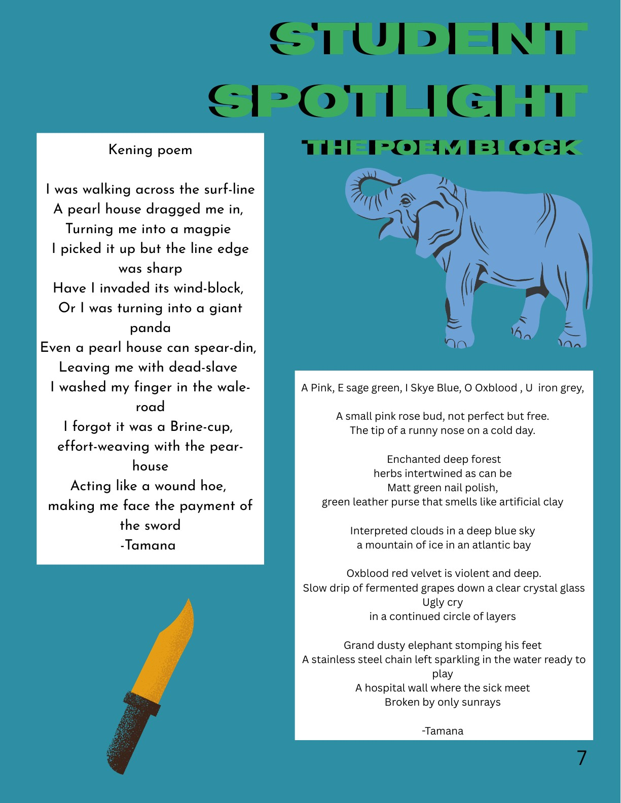
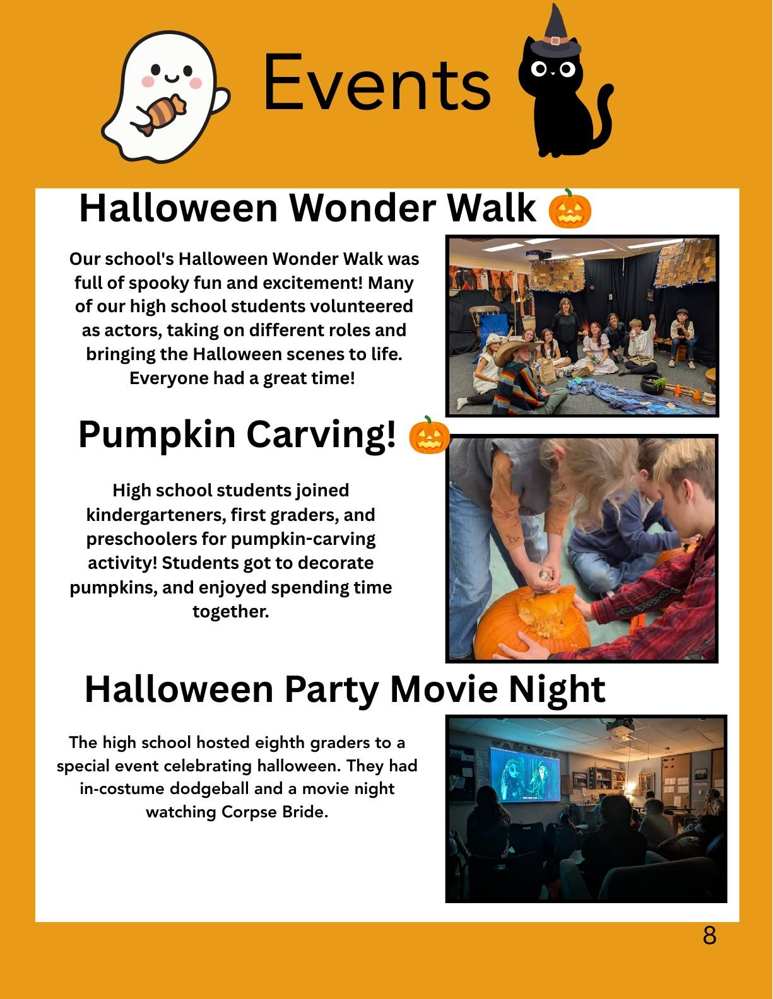
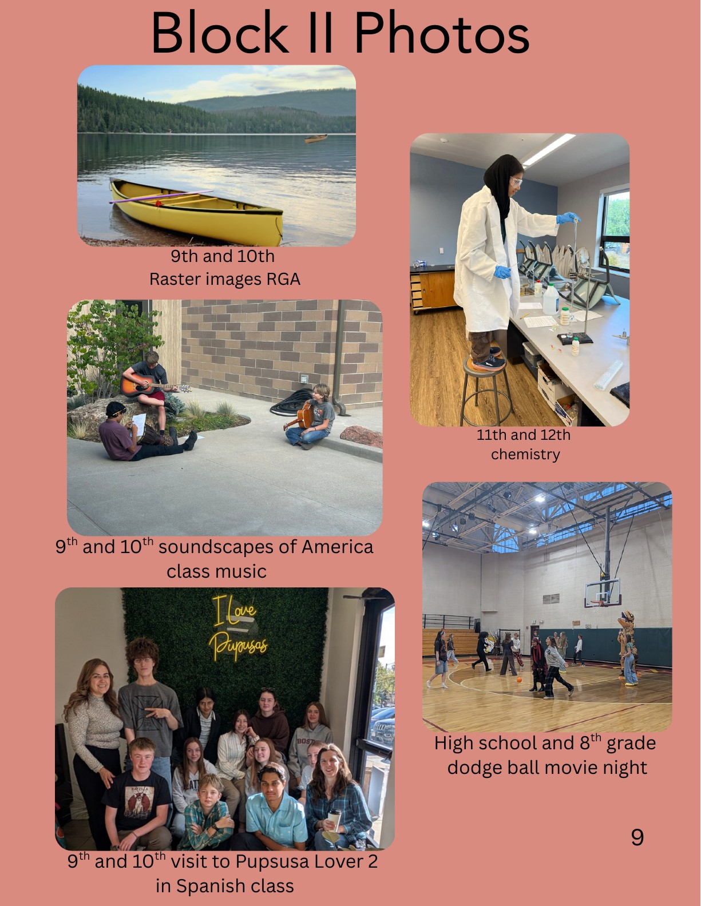
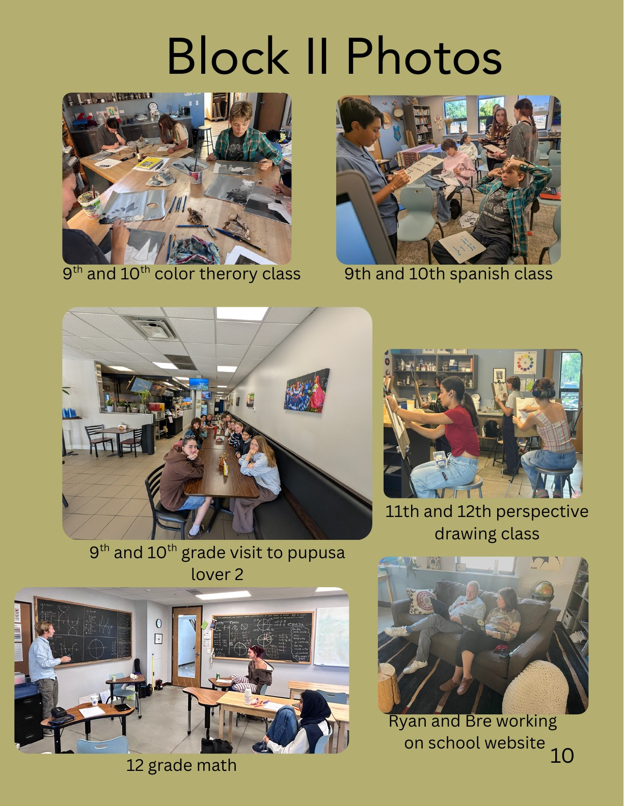

Cover
Read page text
Date of issue: 11/5/26
WELCOME TO THE HIGH SCHOOL NEWSLETTER
Block III classes

Read page text
BLOCK III CLASSES
Dates: Nov 2 — Dec 4
MAIN LESSON:
9/10: Chemistry-organic
Mr.Inman
11/12: Projective Geometry
Ms. Ryerson
SPANISH:
Interm High
Ms. Irwin
STEAM:
Raster Images
Mr. Levine
ART:
9/10 Stained Glass
Ms. Zekonis
11/12 Stone Carving
Mr. Haggerty
ENGLISH:
9/10 Nature Writing
Ms. Mackinnon
11/12 Theater reading
Ms. Mackinnon
November at a glance

Read page text
November at
a Glance
6th: Coffee Truck Friday after school
Campus Beautification
7th: All School Open House
11th: Middle School & Beyond Eve
13th: Lantern walk
18th: Autumn Concerts
19th: Autumn Curriculum Assembly
23rd- 27th: Fall Break
Sports outside of school

Read page text
Sports Sports outside of school Students in our high school have recently begun playing sports at other high schools, enabling them to play while enjoying our school experience. Sadie Goldhammer plays basketball at Niwot high school, and Brooklyn Kim plays volleyball and basketball at Fairview high school. Eshwa Khurshid does wrestling at Broomfield high school. Dawson DeMola also flies planes at Journeys Aviation.
Good news
Read page text
good news THERES A LOT TO BE HOPEFUL ABOUT
This past July Denmark joined Norway in a new record. 97% of people in Denmark bought electric cars! this is an amazing step forward in correcting damage to the planet.
An interesting study at North Carolina State Univercity shows that listening to birdsong specifically in a forest setting it lowers you're stress levels. in the study students were challenged to find different reactions to different sounds in urban settings.
Here in Colorado near Castle Rock, a wildlife crossing has lowered animal vehicle-related deaths by 91% in the past 10 months since it has been built.
Sydney REctor
Sources: The Driven: 97% making efforts to change climte for better NC State Univercity news: calming birdsong The Colorado Sun: colorado wildlife crossing bridge
Highlighting teachers

Read page text
Highlighting Teachers Julie Irwin, or Profe, as she’s known by her students, always does her best to make language learning as fun for her students as it was for her. Language was always her favourite subject in school, it offered her a way to share the perspective of millions of people around the world. Spanish especially was her favourite, and she fell in love with the Spanish-speaking countries that she visited, like Costa Rica, Chile, and Ecuador. She decided that she wanted to bring the language she loved to other people, and so she became a teacher. Now, she brings her passion to the classroom. Students can see that she loves her work, loves watching her students learn and grow. She’s always willing to help, to challenge, and to praise, when the moment calls for it. Through all of these things, Profe makes learning Spanish fun, for everybody.
Student spotlight

Read page text
Student Spotlight
Kening poem
I was walking across the surf-line
A pearl house dragged me in,
Turning me into a magpie
I picked it up but the line edge
was sharp
Have I invaded its wind-block,
Or I was turning into a giant
panda
Even a pearl house can spear-din,
Leaving me with dead-slave
I washed my finger in the waleroad
I forgot it was a Brine-cup,
effort-weaving with the pearhouse
Acting like a wound hoe,
making me face the payment of
the sword
-Tamana
The poem block
A Pink, E sage green, I Skye Blue, O Oxblood , U iron grey,
A small pink rose bud, not perfect but free.
The tip of a runny nose on a cold day.
Enchanted deep forest
herbs intertwined as can be
Matt green nail polish,
green leather purse that smells like artificial clay
Interpreted clouds in a deep blue sky
a mountain of ice in an atlantic bay
Oxblood red velvet is violent and deep.
Slow drip of fermented grapes down a clear crystal glass
Ugly cry
in a continued circle of layers
Grand dusty elephant stomping his feet
A stainless steel chain left sparkling in the water ready to
play
A hospital wall where the sick meet
Broken by only sunrays
-Tamana
Halloween events

Read page text
Events Halloween Wonder Walk Our school's Halloween Wonder Walk was full of spooky fun and excitement! Many of our high school students volunteered as actors, taking on different roles and bringing the Halloween scenes to life. Everyone had a great time!
Pumpkin Carving! High school students joined kindergarteners, first graders, and preschoolers for pumpkin-carving activity! Students got to decorate pumpkins, and enjoyed spending time together.
🎃
🎃
Halloween Party Movie Night The high school hosted eighth graders to a special event celebrating halloween. They had in-costume dodgeball and a movie night watching Corpse Bride.
Block II photos

Read page text
Block II Photos
9th and 10th Raster images RGA
11th and 12th chemistry
9th and 10th soundscapes of America class music
High school and 8th grade dodge ball movie night
9th and 10th visit to Pupsusa Lover 2 in Spanish class
Block II photos, continued

Read page text
Block II Photos
9th and 10th color therory class
9th and 10th spanish class
9th and 10th grade visit to pupusa lover 2
12 grade math
11th and 12th perspective drawing class
Ryan and Bre working on school website
Reader survey
Read page text
Click here!
Take our survey!